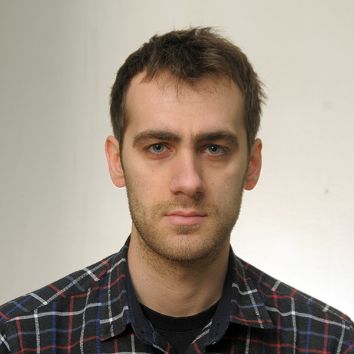

Dino Turalic

Summary
Education
- Bachelor with honours in IT engineering - “Mihajlo Pupin” Technical Faculty
- Master degree in IT engineering (yet to defend master work) - “Mihajlo Pupin” Technical Faculty
Work Exprience
IT Security Architect - “Stada GIS”, Beogradski put bb, Vrsac, Serbia
September 2023 - present
- Newly reqeusted software assesment, project consulting, Claroty enrloment, SPF, DKIM, DMARC, MTA-STS, network connection approval
Skills
- Microsoft Windows 7, 8, 10
- Windows Server 2012, 2019
- Active Directory
- CITRIX environment
- Azure
- SCCM
- SCSM
- Reporting and analytics
- Microsoft Office 365
- HTML5
- CSS
Driving license
I am a holder of a Serbian drivers licence. Category B vehicle.
Other